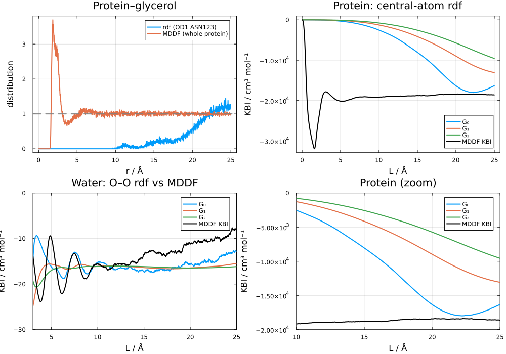
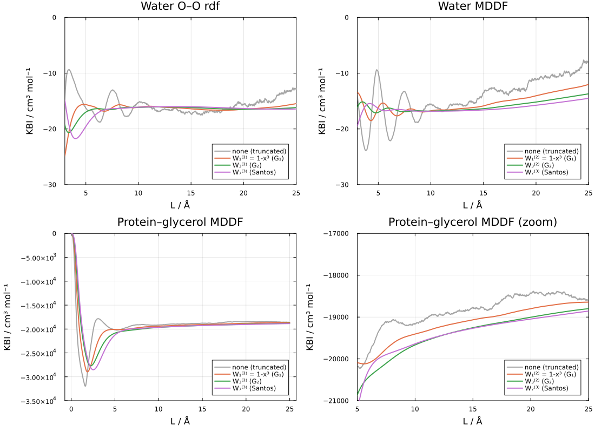
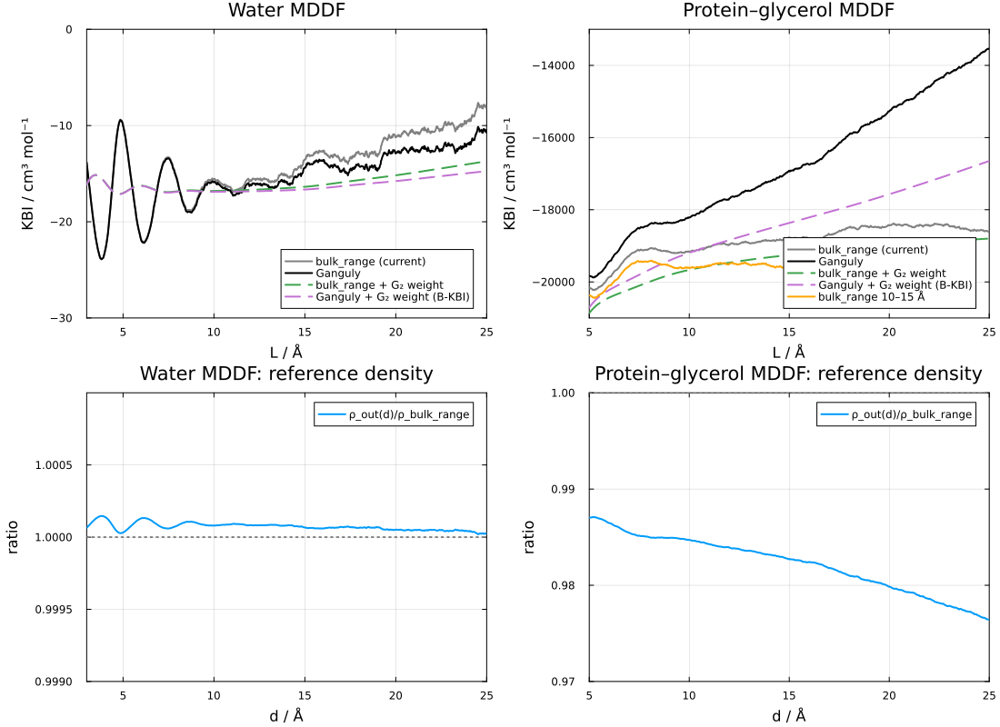
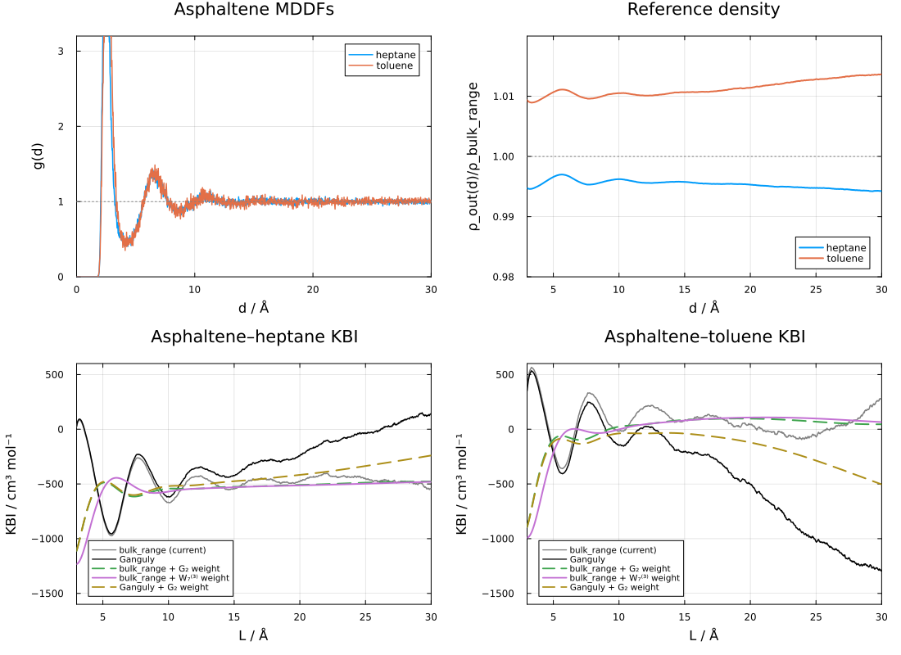
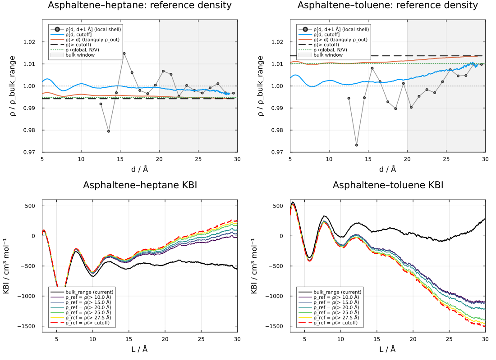
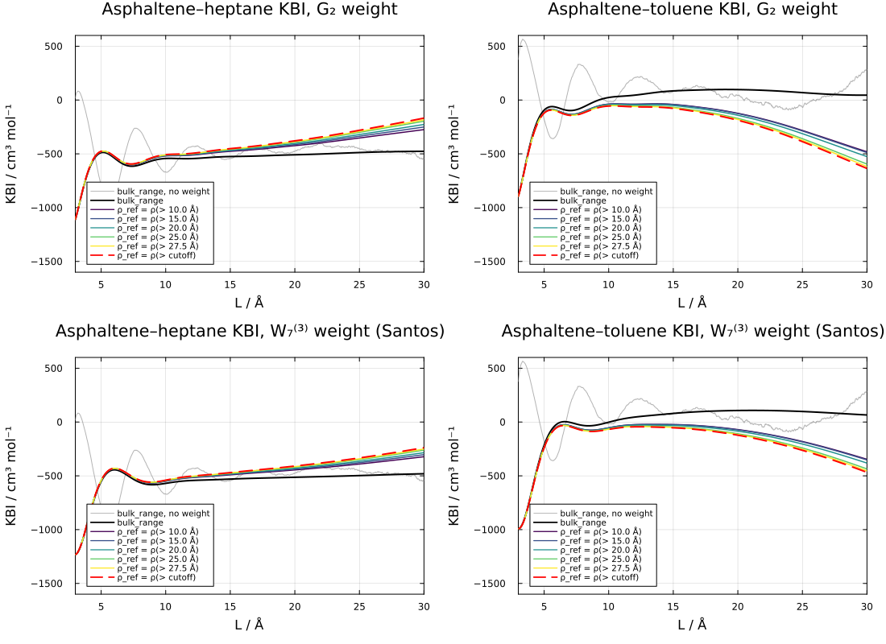
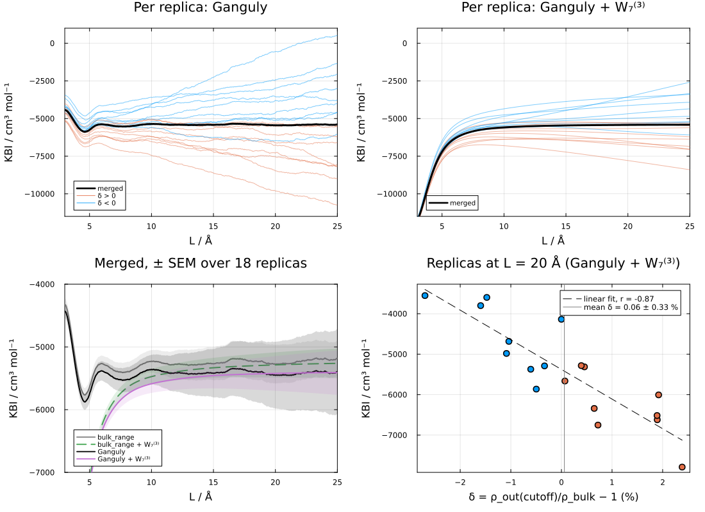

Notes on KBI convergence
This page records an analysis of the convergence of Kirkwood-Buff integrals (KBIs) computed from radial (RDF) and minimum-distance (MDDF) distribution functions, and of the normalization of these distributions in closed (finite) simulation boxes. It is a working document: none of the procedures discussed here, except those described in Kirkwood-Buff integrals, are currently implemented in the package. The code blocks are not executed when the documentation is built, and the protein data is not distributed with the package.
Systems analyzed
Pure water (6845 molecules, cubic box of ~58.7 Å). Two results files from the same trajectory, available in the test data:
rwO_20_25.json: water oxygen as solute and solvent, a radial distribution function.rw_20_25.json: complete water molecules as solute and solvent, a minimum-distance distribution.
Protein in water/glycerol (the system of the Protein in water/glycerol example, 4302 glycerol molecules, box volume ~1.26×10⁶ ų, side ~108 Å). The protein–glycerol MDDF was computed with
bulk_range=(20.0, 25.0)andbulk_range=(10.0, 15.0). An RDF was also computed using as the solute a single atom of the protein, the atom closest to its center of mass (OD1 of ASN 123, 1.6 Å from the center of mass; the protein extends up to ~28 Å from its center).Asphaltene in heptane/toluene (one asphaltene model molecule of 54 atoms, 2080 heptane and 1230 toluene molecules, cubic box of ~90 Å, 1000 frames). The MDDFs of the asphaltene relative to each solvent component were computed with
dbulk=20.0andcutoff=30.0. This is discussed in a separate section.Protein in an aqueous solution of EMIM/Cl/BF4 (ubiquitin, 1004 EMIM⁺, 502 Cl⁻, 502 BF4⁻, 18315 water molecules, box of ~90×92×96 Å). 18 independent simulations of 10 ns (1000 frames) each, started from independent initial configurations. The protein–EMIM MDDFs were computed with
bulk_range=(20.0, 25.0). This is discussed in a separate section.
Throughout, $L$ is the upper limit of integration, and the estimators $G_0$, $G_1$ and $G_2$ are those of kbi.
RDF versus MDDF KBIs

Water (bottom left). The $G_2$ estimator of the O–O RDF is stable at about -16 cm³ mol⁻¹. The KBI of the MDDF reaches similar values at 8–12 Å (about -15.7 cm³ mol⁻¹), and drifts upward at larger distances (to about -8 cm³ mol⁻¹ at 25 Å). The drift of the truncated RDF KBI ($G_0$) and that of the MDDF KBI are of the same magnitude for $L > 16$ Å. The additional drift of the MDDF KBI originates mostly in the 12–16 Å range, where the MDDF deviates from one by ~4×10⁻⁴, an amount comparable to the uncertainty in the bulk density (the bulk densities of the two runs differ by 2×10⁻⁴ in relative terms). The shell volumes of the MDDF are only 4–9% larger than those of the RDF in this range, thus the difference is not geometric. We found no evidence that the additional drift is intrinsic to the MDDF.
Protein (top and bottom right). The RDF computed from the central atom is zero up to ~10 Å, and reaches one only at ~22 Å. The KBI is dominated by the excluded volume of the protein, and none of the estimators ($G_0$, $G_1$, $G_2$) converges up to 25 Å. The MDDF, on the other side, has its first peak at ~2 Å and is close to one beyond ~5 Å, and its KBI appears to converge at ~-18500 to -19000 cm³ mol⁻¹. (This apparent convergence is questioned in the sections below.)
The reason for the different behavior is that the RDF measures distances from an atom, such that the excluded volume of a large solute extends to distances of the order of its radius, while the MDDF measures distances from the surface of the solute, such that the excluded volume is always at $d \lesssim 2-3$ Å. The size of the solute is transferred to the volume element of the MDDF.
Weight functions applied to the MDDF
The argument of Santos
Santos [3] showed that the derivation of the weight functions of Krüger and Vlugt [1, 2] is purely mathematical. Any one-dimensional integral can be written as a volume integral in $d$ dimensions:
\[I[F] = \int_0^\infty F(r)\,dr = \int d^d\mathbf r\,\frac{F(r)}{\Omega_d\, r^{d-1}}\]
and the finite-sphere identity
\[\int_0^L F(r)\, y_d(r/L)\, dr = I[F] - \frac{a_d}{L}\, I[F r] + O(L^{-3})\]
where $\Omega_d y_d(x)$ is the intersection volume of two $d$-dimensional spheres of unit diameter separated by $x$, holds for any $F$ with finite moments. The error is $O(L^{-3})$ because $y_d(x) - 1$ has no $x^2$ term (for odd $d$ it is an odd polynomial). Applying the identity recursively to $F r^n$ eliminates the unknown moments, giving
\[I[F] = \int_0^L F(r)\, W_d^{(k)}(r/L)\, dr + O(L^{-3}), \qquad W_d^{(k)}(x) = y_d(x)\sum_{n=0}^{k} (a_d x)^n.\]
$G_2$ corresponds to $(d, k) = (3, 2)$ and $G_1$ to $(d, k) = (1, 2)$. Larger $d$ produces weights that vanish more smoothly at $x = 1$, which is beneficial for long correlation lengths. Santos recommends $W_7^{(3)}(x) = (1-x)^4 (1 + 35x/16)(1 + 1225x^2/256)(1 + 29x/16 + 5x^2/4 + 5x^3/16)$.
Since the integral is "blind" to the origin of $F$, the weights can be applied to the integrand of the MDDF KBI, $F(d) = [g_{md}(d) - 1]\, dV/dd$, although the interpretation of $G(L)$ as the KBI of a finite sphere is lost.
The caveat: monotonic integrands
The residual error is controlled by the moments $I[F r^n]$, $n \geq 3$. If $F$ oscillates, these moments are small (positive and negative lobes cancel), and the weights reduce the error associated with the oscillations at $r = L$. If $F$ decays monotonically, the moments are not small, and the weighted integral has an algebraic error of order $(\xi/L)^3$, where $\xi$ is the correlation length, while the truncated integral has an error that decays as the tail $\int_L^\infty F$. In this case truncation is the better estimate. In the extreme case of $F$ vanishing beyond some $r_0 < L$, truncation is exact, and the weighted integral is not.
The excluded volume
A contribution $A$ to the KBI localized at a distance $r_0$ is integrated as $A\,W(r_0/L) \approx A[1 - c_3 (r_0/L)^3]$, with $c_3 = 23/8$ for $G_2$. Thus, the excluded volume of the solute affects the weighted estimators in proportion to $(r_0/L)^3$. Fraction of the excluded-volume contribution lost by the $G_2$ weight:
| Case | L = 10 Å | L = 20 Å | L = 25 Å |
|---|---|---|---|
| Protein MDDF ($d < 2.5$ Å) | 1.1% | 0.15% | 0.08% |
| Protein central-atom RDF ($r < 20$ Å) | 69% | 65% | 43% |
| Water O–O RDF ($r < 2.5$ Å) | 2.1% | 0.27% | 0.14% |
The weights are, therefore, harmless for the MDDF of a large solute, while they fail completely for the RDF of a buried atom.
Results

KBIs (cm³ mol⁻¹) computed with the weights applied to the RDF and MDDF integrands:
| L (Å) | truncated | $W_1^{(2)}$ ($G_1$) | $W_3^{(2)}$ ($G_2$) | $W_7^{(3)}$ | |
|---|---|---|---|---|---|
| Water O–O RDF | 10 / 15 / 20 / 25 | -15.2 / -17.3 / -15.6 / -12.8 | -16.1 / -16.4 / -16.5 / -15.5 | -16.1 / -16.2 / -16.5 / -16.2 | -16.1 / -16.0 / -16.3 / -16.4 |
| Water MDDF | 10 / 15 / 20 / 25 | -15.6 / -13.5 / -11.2 / -8.2 | -16.7 / -15.9 / -14.1 / -12.0 | -16.8 / -16.4 / -15.2 / -13.7 | -16.8 / -16.6 / -15.8 / -14.5 |
| Protein MDDF | 10 / 15 / 20 / 25 | -19159 / -18764 / -18437 / -18618 | -19407 / -19067 / -18800 / -18643 | -19668 / -19255 / -19005 / -18800 | -19641 / -19270 / -19048 / -18857 |
- For water, the weights remove the oscillations of both the RDF and the MDDF KBIs. $W_7^{(3)}$ is the most stable at long distances. The weighted MDDF KBIs reach -16.7 to -16.8 cm³ mol⁻¹ at 8–12 Å, close to the -16.1 cm³ mol⁻¹ of the RDF. The long-range drift is damped, but not removed, consistently with it not being a truncation effect.
- For the protein, the weights remove the oscillations near contact, but all estimates drift slowly (from ~-19650 at 10 Å to ~-18850 cm³ mol⁻¹ at 25 Å). The unweighted KBI also drifts by ~700 cm³ mol⁻¹ between 10 and 20 Å. The tail of the integrand is monotonic, which is the case where the weights do not help.
The weighted integrals were computed from the per-bin excess counts:
using ComplexMixtures: units
W3(x) = (1 - x)^2 * (1 + x/2) * (1 + 3x/2 + 9x^2/4) # G₂
hmd(R) = (R.md_count .- R.md_count_random) ./ R.density.solvent_bulk # ų per bin
function wkbi(h, R, W)
L = [i * R.files[1].options.binstep for i in eachindex(R.d)]
return [units.Angs3tocm3permol * sum(h[i] * W(R.d[i] / L[j]) for i in 1:j) for j in eachindex(L)]
end
wkbi(hmd(R), R, W3)Shape-dependent finite-volume KBIs
Krüger and Vlugt [2] showed that, for a finite subvolume $V$ of any shape, the two-point integral
\[G(V) = \frac{1}{V}\int_V d\mathbf r_1 \int_V d\mathbf r_2\, h(r_{12}) = \int_0^\infty h(r)\,w(r)\,dr, \quad w(r) = 4\pi r^2\left(1 - \frac{A}{4V}\,r + O(r^2)\right)\]
such that $G(V) = G_\infty + F_\infty/L + O(L^{-2})$, with $L = 6V/A$. The $O(L^{-3})$ error of $G_2$ requires spherical subvolumes (for a cube, $w(r)$ already has an $x^2$ term).
This result does not apply to the MDDF KBI. $G(V)$ averages over pairs of particles that are both inside $V$, and is associated with the fluctuations of the number of particles in an open subvolume. The MDDF KBI is a one-center integral (the solute is fixed, and the solvent is counted in the domain around it), which is the analogue of the truncated integral $G_0$. For a one-center integral in an open system there is no $1/L$ (or $A/V$) term: once $L$ exceeds the correlation length, the integral converges as its tail vanishes. A linear dependence of the MDDF KBI on $A/V$ of the solute domain is, thus, not a surface term, and should not be extrapolated. It must arise from other sources, such as a slow tail of the distribution or the closed-system errors discussed next.
Bulk density and closed-system corrections
The Ganguly correction is a bulk-density normalization
The correction of Ganguly and van der Vegt [4], as written by Milzetti et al. [5], is
\[g^{\rm G}(r) = g(r)\,\frac{N_j f(r)}{N_j f(r) - \Delta N_{ij}(r) - \delta_{ij}},\qquad f(r) = 1 - \frac{V(r)}{V_{\rm tot}}.\]
The numerator is $\rho\,[V_{\rm tot} - V(r)]$, and the denominator is the number of solvent molecules outside $r$ (excluding the reference molecule if it is of the same type). Thus, the correction renormalizes $g(r)$ by the density outside $r$:
\[\rho_{\rm out}(r) = \frac{N - \delta - N_{\rm in}(r)}{V_{\rm tot} - V(r)}.\]
This is the same expression used by ComplexMixtures to compute the bulk density when only dbulk is defined (usecutoff = false), evaluated at every $r$ instead of only at dbulk. When bulk_range is defined, the density is estimated from the solvent molecules in the bulk window. Beyond the correlation length, $\rho_{\rm out}(r)$ is constant and equal to the local bulk density of the closed system, which is the quantity estimated in the bulk window. Thus, both modes of ComplexMixtures are, to leading order, Ganguly-type normalizations: bulk_range estimates the density from a shell (noisier, but it does not assume the rest of the box to be uniform), and dbulk from all the rest of the box.
The number of molecules outside dbulk is perfectly anticorrelated with the number of molecules inside it, in each frame. This does not invalidate the estimate: the correction uses only average numbers of molecules, and the anticorrelation is precisely the closed-system depletion effect that the correction accounts for.
Comparison of corrections in the literature
Milzetti et al. [5] compared these corrections for urea–water mixtures. Relevant findings:
The best estimator (B-KBI) is the Ganguly-corrected RDF integrated with the Krüger weight $4\pi r^2 (1 - x^3)$ (i.e., $G_1$). The RDF must be corrected before weighting. Normalizing the distribution by the bulk density and then applying
kbi(R; correction=:G2)is equivalent, with a better weight.Besides suppressing oscillations, the weight reduces the influence of the noisy tail of the RDF.
The box behaves as a particle bath when the probed volume is a small fraction of the total volume (2.6% in their example). In the systems analyzed here:
System $V(\text{dbulk})/V_{\rm tot}$ $V(\text{cutoff})/V_{\rm tot}$ Water, bulk range 20–25 Å 0.18 0.34 Protein, bulk range 20–25 Å 0.25 0.36 Protein, bulk range 10–15 Å 0.11 0.17 Two ways of reading the KBI are compared: the average of the uncorrected KBI over one oscillation in the correlated region (CR), and the plateau of the B-KBI at long distances (LR). For large boxes, CR was more robust; LR failed for poorly sampled or nonideal systems, which they diagnose by a slope larger than 10 cm³ mol⁻¹ nm⁻¹ of the B-KBI tail.
The two-system-size correction of Krüger et al. was the noisiest of the methods.
The Ganguly normalization applied to the MDDF
With the quantities stored in a Result, the reference density outside $d$ and the corresponding KBI integrand are:
function ganguly(R; self=false)
ρb = R.density.solvent_bulk
Vd = cumsum(R.md_count_random) ./ ρb # volume of the domain within d (ų)
Nin = cumsum(R.md_count) # solvent molecules within d
N = R.solvent.nmols - (self ? 1 : 0)
ρout = @. (N - Nin) / (R.volume.total - Vd)
h = @. R.md_count / ρout - R.md_count_random / ρb # ų per bin
return h, ρout
end
KBIs in cm³ mol⁻¹:
| L (Å) | bulk_range | Ganguly | Ganguly + $G_2$ weight | $\rho_{\rm out}/\rho_{\rm bulk}$ | |
|---|---|---|---|---|---|
| Water MDDF | 10 | -15.6 | -15.9 | -16.9 | 1.00008 |
| 20 | -11.2 | -12.9 | -15.8 | 1.00005 | |
| 25 | -8.2 | -10.7 | -14.7 | 1.00003 | |
| Protein MDDF | 10 | -19159 | -18213 | -19196 | 0.98471 |
| 20 | -18437 | -15276 | -17573 | 0.97987 | |
| 25 | -18618 | -13537 | -16650 | 0.97644 |
- Water. The two normalizations agree to 10⁻⁴, and the Ganguly normalization slightly reduces the long-range drift. The combination with the $G_2$ weight is the most stable estimate.
- Protein. The density of glycerol in the rest of the box is 1.5–2.5% lower than in the 20–25 Å bulk window, and $\rho_{\rm out}(d)$ decreases steadily with $d$. The bulk densities obtained with the two bulk windows also differ: $\rho_{\rm bulk}/\rho$ is 1.0464 for 10–15 Å and 1.0402 for 20–25 Å, which explains the ~4% difference (~800 cm³ mol⁻¹) between the KBIs obtained with the two windows. The glycerol density keeps varying with the distance to the protein up to, and beyond, the cutoff: there is no region of uniform bulk density in this box. This may be associated with a long-range composition gradient, with insufficient sampling of the glycerol/water composition fluctuations, or both.
Consequently, the apparent convergence of the MDDF KBI of the protein, obtained with bulk_range, hides a systematic uncertainty. The KBI depends on whether the reference density is that of a shell or that of the rest of the box, and varies from ~-13500 to ~-19500 cm³ mol⁻¹, a spread of 25–30%. A flat running KBI does not, by itself, demonstrate convergence when the bulk density is estimated from a window within the integration range, because the normalization forces the average of $g - 1$ to vanish in that window.
A small solute in a mixed solvent: asphaltene in heptane/toluene
The asphaltene model is a small solute (54 atoms, with a largest interatomic distance of ~18 Å), solvated by a heptane/toluene mixture (molar fraction of toluene 0.37). The MDDFs of the asphaltene relative to heptane and to toluene were computed from the same trajectory, with dbulk=20.0 and cutoff=30.0 (the bulk density is estimated in the 20–30 Å shell). There is a single solute molecule, and 1000 frames. Only the MDDFs are available for this system: the RDFs, which require the trajectory, were not computed.

Correlation length. Both MDDFs have a first peak at ~2.4 Å (heptane) and ~2.7 Å (toluene), a second solvation shell at 6–7 Å, and are indistinguishable from one beyond ~12 Å. Averaged over 0.5 Å bins, $g(d)$ fluctuates around one by 0.3–0.6% in the 20–30 Å range, which is of the order of the statistical noise of the counts. The correlations are, thus, short-ranged compared to the size of the domain.
Weights. The truncated KBIs (R.kb, gray) oscillate by ±200–300 cm³ mol⁻¹ up to the cutoff. These oscillations are mostly noise of the integrand at long distances, amplified by the volume of the shells. The $G_2$ and $W_7^{(3)}$ weights applied to the MDDF integrand (computed as in the previous sections) remove the oscillations, and give stable values from $L \approx 8$ Å up to the cutoff. Here the weights are useful because the integrand beyond the second shell is noise around zero, and not a monotonic tail.
Reference density. The ratio $\rho_{\rm out}(d)/\rho_{\rm bulk}$ is approximately constant, but different from one: ~0.995 for heptane and ~1.010–1.014 for toluene. That is, the 20–30 Å shell used to estimate the bulk density is enriched in heptane by 0.5% and depleted in toluene by 1% relative to the rest of the box. These differences correspond to only two or three molecules in the shell (which contains, on average, ~400 heptane and ~225 toluene molecules), and are much larger than the closed-system depletion caused by the solute ($\rho G/V \approx 0.1\%$ for heptane, and negligible for toluene). They are, most likely, composition fluctuations of the mixture not averaged out in 1000 frames of a single solute molecule. Because the integration volume grows with $L$, an offset of 1% in the reference density produces a drift of ~1% of $V(L)$ in the KBI, which is ~250 cm³ mol⁻¹ at 25 Å, and of the order of the KBIs themselves. This is the drift of the Ganguly-normalized KBIs (black).
KBIs in cm³ mol⁻¹:
| L (Å) | truncated | $G_2$ weight | $W_7^{(3)}$ weight | Ganguly | Ganguly + $G_2$ weight | $\rho_{\rm out}/\rho_{\rm bulk}$ | |
|---|---|---|---|---|---|---|---|
| Heptane | 10 | -669 | -543 | -570 | -617 | -520 | 0.9962 |
| 15 | -544 | -525 | -530 | -423 | -475 | 0.9958 | |
| 20 | -480 | -509 | -513 | -245 | -417 | 0.9953 | |
| 25 | -450 | -488 | -498 | -34 | -336 | 0.9948 | |
| Toluene | 10 | -17 | 23 | -2 | -144 | -38 | 1.0105 |
| 15 | 80 | 85 | 80 | -205 | -39 | 1.0107 | |
| 20 | 41 | 97 | 107 | -504 | -121 | 1.0114 | |
| 25 | -65 | 69 | 98 | -1023 | -286 | 1.0128 | |
| Toluene − heptane | 10 | 652 | 566 | 568 | 473 | 482 | |
| 15 | 624 | 610 | 610 | 218 | 436 | ||
| 20 | 521 | 606 | 621 | -259 | 296 | ||
| 25 | 385 | 557 | 596 | -989 | 50 |
- The weighted
bulk_rangeestimates are the most stable: ~-500 cm³ mol⁻¹ for heptane and ~50–100 cm³ mol⁻¹ for toluene, giving a preferential solvation of the asphaltene by toluene of $G_{\rm tol} - G_{\rm hep} \approx 550-620$ cm³ mol⁻¹. As discussed for the protein, part of this stability is enforced by the normalization in the bulk window. - At $L \approx 10$ Å, where the correlations have decayed but the integration volume is still small, all estimates agree within ~150 cm³ mol⁻¹, and the preferential solvation is ~470–650 cm³ mol⁻¹. This is a reasonable estimate of the systematic uncertainty of the result.
- Even with a small solute and short correlation lengths, the KBIs computed at large $L$ are limited by the accuracy of the reference density, not by the decay of the correlations. In mixtures, the reference densities of the components are affected by slow composition fluctuations, which require longer sampling (or more solute molecules) than the decay of $g(d)$ itself suggests.
Where is the reference density uniform?
A natural test of the bulk-density estimate is to compute the density of everything beyond a distance $x$, for $x$ varying from dbulk to the cutoff, and to check if it is constant. The number of molecules beyond the cutoff plus those in $[x, \text{cutoff}]$ is $N - N_{\rm in}(x)$, and the same holds for the volume, so this density is exactly the Ganguly $\rho_{\rm out}(x)$. Because ~90% of the volume beyond any $x < \text{cutoff}$ lies beyond the cutoff, $\rho_{\rm out}(x)$ is dominated by the outer region, and is nearly independent of $x$. A sharper diagnostic is to compare the differential densities: the density in thin shells, $\rho[d, d+1\,\text{Å}]$, the density in $[d, \text{cutoff}]$, and the density beyond the cutoff:

| $x$ (Å) | $\rho(>x)/\rho_b$ | $\rho[x,\text{cutoff}]/\rho_b$ | KBI($L$=10) | KBI(15) | KBI(20) | |
|---|---|---|---|---|---|---|
| Heptane | 10 | 0.9962 | 1.0010 | -619 | -433 | -274 |
| 20 | 0.9953 | 0.9993 | -607 | -406 | -225 | |
| 27.5 | 0.9945 | 0.9979 | -597 | -382 | -180 | |
| Toluene | 10 | 1.0105 | 1.0025 | -146 | -209 | -496 |
| 20 | 1.0114 | 1.0030 | -157 | -234 | -542 | |
| 27.5 | 1.0133 | 1.0089 | -180 | -284 | -637 |
($\rho_b$ is the bulk_range density; the KBIs, in cm³ mol⁻¹, are computed with $\rho(>x)$ as the reference density. Beyond the cutoff, $\rho/\rho_b$ is 0.9942 for heptane and 1.0137 for toluene.)
- The densities within the cutoff sphere agree with each other: the shell densities of heptane scatter around one, and $\rho[x,\text{cutoff}]$ stays within 0.1–0.3% of $\rho_b$. For toluene, $\rho[x,\text{cutoff}]$ increases from ~1.000 to ~1.009 approaching the cutoff, thus the density is still varying at 30 Å.
- The discrepancy is between the inside and the outside of the cutoff sphere. The choice of $x$ changes the KBIs by only 20–40 cm³ mol⁻¹ at $L = 10$ Å, while any reference density taken from the outer region gives KBIs that differ from the
bulk_rangeKBIs by several hundred cm³ mol⁻¹ at $L \geq 20$ Å. - The shell densities fluctuate by ±1–2%, as much as the offset being detected. The test is limited by the sampling.
With the $G_2$ or $W_7^{(3)}$ weights applied to each of these integrands, the oscillations are removed and the drift is reduced by a factor of ~3, but not eliminated: a constant offset in the reference density gives a contribution to the integral that grows with the volume, which the weights can attenuate, but not correct.

KBIs (cm³ mol⁻¹) with the $W_7^{(3)}$ weight:
| L (Å) | bulk_range | $\rho_{\rm ref} = \rho(>10\,\text{Å})$ | $\rho_{\rm ref} = \rho(>\text{cutoff})$ | |
|---|---|---|---|---|
| Heptane | 10 | -570 | -551 | -541 |
| 15 | -530 | -491 | -470 | |
| 20 | -513 | -445 | -409 | |
| 25 | -498 | -391 | -334 | |
| Toluene | 10 | -2 | -53 | -69 |
| 15 | 80 | -23 | -53 | |
| 20 | 107 | -70 | -122 | |
| 25 | 98 | -180 | -263 |
At $L$ = 10–15 Å all reference densities agree within 60–130 cm³ mol⁻¹, and the preferential solvation by toluene is ~420–610 cm³ mol⁻¹. Beyond ~15 Å the result is controlled by the reference density, and the apparent convergence of the weighted bulk_range KBIs is enforced by the normalization in the bulk window.
Fluctuation or finite-size effect?
Three observations suggest that the reference-density offsets are sampling fluctuations of the composition of the mixture, and not a size effect:
- The closed-system effect of the solute is too small. The depletion of the bulk caused by the solute is $\rho G/V$, ~0.1% for heptane ($G \approx -500$ cm³ mol⁻¹, $V \approx 7.3\times 10^5$ ų), and negligible for toluene ($G \approx 0$). The observed offsets are -0.6% and +1.4%.
- The offsets are an exchange of components at constant volume. Weighted by the molar volumes (~147 cm³ mol⁻¹ for heptane, ~107 cm³ mol⁻¹ for toluene), the density offsets cancel: $0.00284 \times (-0.0058) \times 147 \approx -0.0024$ and $0.00168 \times 0.0137 \times 107 \approx +0.0025$. The region within the cutoff has a slightly different molar fraction than the rest of the box, at the same packing. (A reproducible long-range preferential solvation would have the same signature in a single simulation, thus this is not a proof.)
- The magnitude is compatible with sampling noise. The 20–30 Å shell contains, on average, ~225 toluene molecules, such that the relative fluctuation of their number in each frame is $\sim 1/\sqrt{225} \approx 7\%$. A residual error of 1.4% requires only ~25 effectively independent samples, which is plausible for 1000 correlated frames of a single, slowly diffusing, solute.
The test is to perform independent simulations, and compute for each of them, and for each component, the offset
\[\delta_k = \frac{\rho_k(>\text{cutoff})}{\rho_{k,\rm bulk}} - 1.\]
- If the offsets are fluctuations, $\delta_k$ changes sign among the simulations, its mean is compatible with zero within the standard error, and the KBIs obtained with the
bulk_rangeand $\rho(>\text{cutoff})$ normalizations converge to each other as more simulations are added. - If the offsets are systematic (a size or closed-system effect, or a real long-range gradient), $\delta_k$ has the same sign and similar magnitude in all simulations, and is not removed by averaging. In this case, a simulation of a larger box with the same composition distinguishes a size effect, which should scale approximately as $1/V$.
Practical recommendations:
- The simulations must start from independent initial configurations (for instance, different Packmol seeds and velocities), and not only from different velocities of the same equilibrated structure, otherwise the slow composition fluctuations may remain correlated.
- Each simulation should be analyzed separately, to obtain $\delta_k$ and the KBIs with their standard errors. The results can then be combined with
merge(results::Vector{<:Result}), which merges the counts, so that the bulk density is estimated from all the data, which is preferable to averaging the KBIs. - If the offset is pure noise, with 5 simulations the standard error of its mean would be ~1.4%/$\sqrt{5}$ ≈ 0.6%, which is only marginally sufficient to distinguish a random scatter from a systematic +1.4%. 8 to 10 simulations would provide a clearer test.
Independent simulations: protein in an EMIM/Cl/BF4 aqueous solution
This system tests the protocol suggested above. The protein–EMIM correlations are strong, and the KBI is large (of the order of the excluded volume of the protein). The MDDFs were computed independently for each of the 18 simulations, and the counts of all simulations were merged with merge. With the bulk_range=(20.0, 25.0) the domain within the cutoff is 42% of the volume of the box, thus the Ganguly reference density is estimated from the remaining 58%. For each simulation, and for the merged result, the KBIs were computed with the bulk_range and Ganguly normalizations, with and without the $W_7^{(3)}$ weight (using the functions shown in the previous sections), together with the offset $\delta = \rho_{\rm out}(\text{cutoff})/\rho_{\rm bulk} - 1$. The standard errors (SEM) are computed from the dispersion of the results of the independent simulations.
Rs = [load("EMI_$i.json") for i in replicas] # one Result per independent simulation
M = merge(Rs) # merged counts
The offsets are fluctuations. The offset $\delta$ is positive in 9 of the 18 simulations. Its mean is $+0.06 \pm 0.33\%$ (SEM), compatible with zero, and its standard deviation is 1.4%, similar to the offsets observed for the asphaltene.
The offset explains the dispersion of the KBIs. In each simulation, the Ganguly KBI drifts with $L$ in the direction determined by the sign of $\delta$: up if the density outside the cutoff is lower than in the bulk window ($\delta < 0$), and down otherwise. At $L = 20$ Å the KBIs (Ganguly + $W_7^{(3)}$) of the individual simulations are linearly correlated with $\delta$ ($r = -0.87$), and the linear fit gives -5378 cm³ mol⁻¹ at $\delta = 0$, close to the KBI of the merged data.
The merged KBI is flat. In the individual simulations the Ganguly KBIs vary from -10700 to +500 cm³ mol⁻¹ at 25 Å, while the KBI of the merged data is flat from ~8 Å. KBIs (cm³ mol⁻¹) of the merged data, ± SEM:
| L (Å) | bulk_range | bulk_range + $W_7^{(3)}$ | Ganguly | Ganguly + $W_7^{(3)}$ |
|---|---|---|---|---|
| 10 | -5230 ± 179 | -5474 ± 121 | -5361 ± 234 | -5588 ± 146 |
| 15 | -5267 ± 263 | -5332 ± 158 | -5418 ± 385 | -5457 ± 204 |
| 20 | -5276 ± 308 | -5287 ± 200 | -5452 ± 533 | -5422 ± 276 |
| 25 | -5193 ± 278 | -5262 ± 236 | -5406 ± 676 | -5410 ± 353 |
The slopes of the weighted KBIs in the 12–25 Å range, computed for each simulation, are compatible with zero: $+7 \pm 16$ cm³ mol⁻¹ Å⁻¹ (Ganguly + $W_7^{(3)}$, positive in 10 of 18 simulations) and $+9 \pm 11$ cm³ mol⁻¹ Å⁻¹ (bulk_range + $W_7^{(3)}$, positive in 12 of 18).
- All estimators agree within their uncertainties beyond ~12 Å. The KBI is $-5400 \pm 250$ cm³ mol⁻¹ (Ganguly + $W_7^{(3)}$, 15–20 Å).
- The $W_7^{(3)}$ weight reduces the SEM by a factor of 1.5–2 relative to the unweighted KBI with the same normalization.
- In each simulation, the Ganguly normalization has the largest dispersion, because the volume amplifies the offset of each simulation. Its advantage appears only after averaging: it is not biased by the normalization in the bulk window, which conceals the offset in the
bulk_rangeKBIs of the individual simulations. Here, the two normalizations agree within ~150 cm³ mol⁻¹, within the SEM. - The number of simulations is what makes the test conclusive: the mean of $\delta$ is determined to ±0.33% with 18 simulations, and would be determined to ±0.6% with 5.
- A finite-size error is not detected, but it can only be bounded at the level of the SEM (~0.3% in the density, ~250 cm³ mol⁻¹ in the KBI).
The recommended protocol, thus, is:
- Perform several (preferably more than 8) simulations from independent initial configurations.
- For each simulation, compute the KBIs with the Ganguly and
bulk_rangenormalizations, with the $W_7^{(3)}$ weight, the offset $\delta$, and the slope of the weighted KBI at long distances. - Merge the counts, compute the Ganguly + $W_7^{(3)}$ KBI of the merged data, and report its average in a range of $L$ beyond the decay of the correlations, with the SEM computed from the independent simulations.
- Verify that $\delta$ and the slopes change sign among the simulations, and that their means are compatible with zero. If they are not, the error is systematic, and a larger box must be tested.
For systems with more than one solvent component, differences of KBIs (as in preferential solvation) should be computed for each simulation, and the SEM of the difference obtained from these, because the offsets of the components are correlated (in the asphaltene example, they are anticorrelated, and the errors of the difference add).
Summary
- For small solutes with oscillatory correlations (water), the corrected RDF estimators ($G_2$, or $W_7^{(3)}$) are the best estimates. The same weights can be applied to the MDDF integrand, with similar results.
- For large solutes, RDFs computed from a single atom are not useful, because the excluded volume extends to distances of the order of the solute radius. The MDDF moves the excluded volume to short distances, where the weights are harmless.
- The weights improve the estimates only if the remaining structure of the integrand near $L$ is oscillatory. They do not correct slow monotonic tails or normalization errors.
- The
A/Vfinite-volume theory applies to two-point integrals in open subvolumes, not to the one-center MDDF KBI. - The
bulk_rangeanddbulknormalizations are Ganguly-type closed-system corrections. Their agreement is a diagnostic: the ratio $\rho_{\rm out}(d)/\rho_{\rm bulk}$ should be close to one and independent of $d$. In the protein–glycerol example it is not, and the KBI is uncertain at the 25% level. - Small solutes with short correlation lengths are not exempt from normalization errors. For the asphaltene in heptane/toluene, 1% differences in the reference densities of the components dominate the uncertainty of the KBIs at large $L$. Weighted estimates at $L$ just beyond the decay of the correlations (~10–15 Å) are the most robust. Independent simulations distinguish fluctuations from systematic errors: the offset of the reference density must change sign among them.
- For a protein in an EMIM/Cl/BF4 solution, the KBIs of 18 independent simulations drift with $L$ by thousands of cm³ mol⁻¹, in directions determined by the offsets of their reference densities. The offsets average to zero, and the KBI of the merged data, with the Ganguly normalization and the $W_7^{(3)}$ weight, is flat, with a SEM of ~5%. Independent simulations are, thus, the most effective way to reduce and to estimate the sampling error of the KBIs.
Possible additions to the package (not implemented)
- Report $\rho_{\rm out}(d)/\rho_{\rm bulk}$ as a diagnostic of the bulk-density estimate.
- Provide the Ganguly normalization as an alternative, so that the difference between the KBIs obtained with the two normalizations can be used as an estimate of the systematic error.
- Allow the weight functions ($G_1$, $G_2$, $W_7^{(3)}$) to be applied to MDDF results, with a note on the caveat for monotonic integrands.
- Report the slope of the weighted KBI at long distances.
- Report the offset $\rho(>\text{cutoff})/\rho_{\rm bulk} - 1$, so that it can be compared among independent simulations.
- Test the protein–glycerol system in a larger box, or with longer sampling, to verify if $\rho_{\rm out}(d)$ becomes flat.
References
- P. Krüger, S. K. Schnell, D. Bedeaux, S. Kjelstrup, T. J. H. Vlugt, J.-M. Simon, Kirkwood–Buff Integrals for Finite Volumes. J. Phys. Chem. Lett. 4, 235 (2013). DOI: 10.1021/jz301992u
- P. Krüger, T. J. H. Vlugt, Size and shape dependence of finite-volume Kirkwood-Buff integrals. Phys. Rev. E 97, 051301(R) (2018). DOI: 10.1103/PhysRevE.97.051301
- A. Santos, Finite-size estimates of Kirkwood-Buff and similar integrals. arXiv:1806.00821 (2018).
- P. Ganguly, N. F. A. van der Vegt, Convergence of Sampling Kirkwood–Buff Integrals of Aqueous Solutions with Molecular Dynamics Simulations. J. Chem. Theory Comput. 9, 1347 (2013). DOI: 10.1021/ct301017q
- J. Milzetti, D. Nayar, N. F. A. van der Vegt, Convergence of Kirkwood–Buff Integrals of Ideal and Nonideal Aqueous Solutions Using Molecular Dynamics Simulations. J. Phys. Chem. B 122, 5515 (2018). DOI: 10.1021/acs.jpcb.7b11831